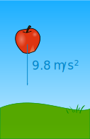
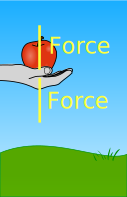
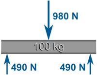
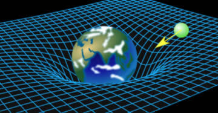
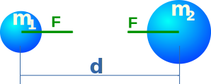
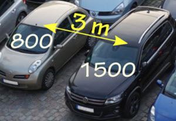
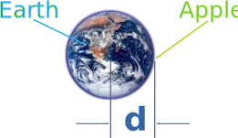

Gravity
Falling Apple
Gravity is all around us. It can, for example, make an apple fall to the ground:

Gravity constantly acts on the apple so it goes faster and faster ... in other words it accelerates.
Ignoring air resistance, its velocity increases by 9.8 meters per second every second. So we get this:
| After 1 second: | 9.8 m/s |
| After 2 seconds: | 19.6 m/s |
| After 3 seconds: | 29.4 m/s |
| etc... |
9.8 meters per second per second (yes, that is two lots of "per second") can be written 9.8 m/s/s, but is usually written:
9.8 m/s2
9.8 m/s2 is the acceleration due to gravity near the Earth's surface. Nearly everything in our lives happens near the Earth's surface, so that value gets used a lot, and is written as a little g:
g = 9.8 m/s2
The average value is 9.80665 m/s2, but values are different around the world, such as Calcutta at 9.78548, London at 9.81599 and Tokyo at 9.79805.
So most people just use 9.8 m/s2

To hold an apple against gravity needs force.
Force is mass times acceleration (F = ma), and in this case the acceleration is g:
F = mg
Example: how much force to hold an apple with a mass of 0.1 kg?
F = mg
F = 0.1 kg × 9.8 m/s2
F = 0.98 kg m/s2
Force is measured in Newtons (N) which are the same as kg m/s2
F = 0.98 N
So it needs a force of about 1 Newton to hold up an apple.
We also say the apple has a weight of 0.98 N.
To convert a mass in kg to a force in Newtons multiply by 9.8 m/s2
Another example:
Example: a 100kg steel beam sits evenly on two supports. How much force is on each support?
The beam exerts a downwards force due to gravity:
F = mg
F = 100 kg × 9.8 m/s2 = 980 N
As it sits evenly on the support, each support bears half the weight (980/2=490):

But What Is Gravity?
Now you know how to deal with gravity here on Earth (just multiply mass by 9.8 m/s2 to get force), but what is gravity really?
Well, mass and energy make space curved (or distorted), so it is natural for objects to follow a path towards each other.

Here an object naturally follows space-time towards
Earth
This results in objects being attracted to each other, which we call Gravity.
Gravity: the attraction of objects with mass or energy towards each other.
This attraction shows as a force that is:
- less for objects that are further away
- more for objects of greater mass (like the Sun)
Imagine just two balls:
Each ball is made of lots of bits of mass and energy that are all attracted to each other:
(Actually needs lots more particles!)
But we normally simplify it by imagining each ball's mass and energy is at its center, called the Center of Gravity.

(But remember we just imagine all the mass is at the center, to make calculations easier.)
Newton worked out a formula for the force of attraction:
F = G m1 m2 d2
- F is the force (in Newtons), which is equal but opposite in direction for both objects
- G is the gravitational constant, approximately 6.674×10-11 N m2/kg2
- m1 and m2 are the two masses (in kg)
- d is the distance between the centers of each mass (in meters)
Example: Two cars with masses of 800 kg and 1500 kg are 3 m apart

The gravitational attraction between the two cars is:
F = G m1 m2 d2
F = 6.674×10-11 N m2/kg2 × 800 kg × 1500 kg (3 m)2
F ≈ 0.000009 N
They are very slightly (only 9 millionths of a Newton) attracted towards each other!

Example: An Apple and the Earth
The apple has a mass of 0.1 kg
The Earth has a mass of 5.972×1024 kg
From the center of the apple to the center of the Earth is 6371 km (6.371×106 m)
F = G m1 m2 d2
F = 6.674×10-11 N m2/kg2 × 0.1 kg × 5.972×1024 kg (6.371×106 m)2
F = 0.98 N
(This is the same value as the earlier apple calculation, so that's good!)
Goes Both Ways
The Earth is also attracted to the apple!
But the Earth is so ridiculously more massive that it hardly affects it.
Let's calculate the acceleration for the apple and for the Earth:
Example (continued): Knowing the force is 0.98 N what is the acceleration for the apple and the Earth?
For the apple:
| F = ma | ||
| We know F is 0.98 N, and m is 0.1 kg | 0.98 N = 0.1 kg a | |
| Divide both sides by 0.1 kg | 0.98 N / 0.1 kg = a | |
| Swap sides | a = 0.98 N / 0.1 kg | |
| Answer: | a = 9.8 m/s2 |
That is the acceleration due to gravity "g" that we all experience every day.
And for the Earth:
| F = ma | ||
| F is 0.98 N, and m is 5.972×1024 kg | 0.98 N = 5.972×1024 kg a | |
| Divide both sides by 5.972×1024 kg | 0.98 N / 5.972×1024 kg = a | |
| Swap sides | a = 0.98 N / 5.972×1024 kg | |
| Answer: | a = 1.64×10-25 m/s2 |
That is an extremely small acceleration, no wonder we don't notice the Earth moving due to the apple.
But a much larger object such as the Moon (with a mass of 7.342×1022 kg) does have a noticeable effect on the Earth.
The Moon orbits the Earth at about 384,000 km every 27.3 days
And the Earth also has an "orbit" (more like a wobble) with the Moon of about 5000 km (which is actually less than the Earth's radius), also every 27.3 days.
Your turn: try to work out the force of attraction between the Earth and the Moon.
Have a Play
Have a play with gravity at Gravity Freeplay.
Summary
- mass and energy curve space, which naturally makes objects move towards each other
- this attraction we call gravity
- this constant attraction makes objects accelerate towards each other
- the acceleration has a matching force (F=ma)
- near the surface of the Earth the acceleration due to gravity is 9.8 m/s2
- so a 1 kg mass experiences a gravitational pull of 9.8 Newtons of force